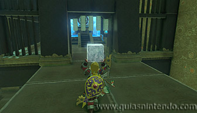

Se encuentra en la región de la torre de Gerudo, al sudeste de la cordillera de Gerudo (al oeste de la meseta de Opall).
El santuario se encuentra dentro de un bloque de hielo, por lo que primero deberás derretirlo. Si bien puedes usar flechas de fuego o armas con el elemento fuego, lo más fácil es encender una hoguera dejando un montón de leña y un pedernal en el suelo y golpeando este último con un arma metálica para encender la madera.
Dentro del santuario deberás coger un bloque de hielo que hay al inicio y llevarlo frente al altar para abrirlo, por lo que deberás avanzar con él en brazos evitando que se deshaga. El primer obstáculo que te vas a encontrar son tres barreras de fuego verticales seguidas de una giratoria que deberás esquivar sin más.
Cuando llegues a una zona en la que hay tres barreras de fuego horizontales que salen de la pared deberás soltar el cubo de hielo y avanzar por debajo del fuego hasta llegar a una zona de lava en la que hay un cubo metálico que deberás coger usando el módulo Imán. Luego colócalo frente a las tres llamas hasta bloquearlas y después vuelve a coger el bloque de hielo y pasa por su lado.
Luego vuelve a dejar el bloque de hielo en el suelo y utiliza otra vez el módulo Imán para coger el cubo metálico y dejarlo donde estaba inicialmente. Así podrás pasar por encima con el bloque de hielo en brazos.

Tras cruzar por encima del cubo metálico deberás volver a usarlo para bloquear las próximas llamas horizontales que te vas a encontrar.
Tras pasar junto al cubo deberás volver a dejar el bloque de hielo en el suelo, coger el cubo metálico con el módulo Imán y colocarlo bajo una cortina de llamas verticales que hay justo a la izquierda, en un nivel algo inferior. De esa manera, podrás planear por encima del bloque y alcanzar un cofre que contiene una espada de hielo.
Regresa ahora a donde dejaste el bloque de hielo subiendo por una escalerilla y avanza hasta llegar a otra cortina de llamas verticales que bloquean el camino, y luego lanza el bloque a través de ellas (se hará más pequeño, pero no se derretirá del todo). Después usa el módulo Imán para volver a hacerte con el cubo metálico y utilízalo como escudo para pasar por debajo de las llamas.
Finalmente, coge el bloque de hielo y avanza hasta llegar frente al altar, momento en el que se abrirá su puerta y podrás examinarlo para obtener un símbolo de valía.
